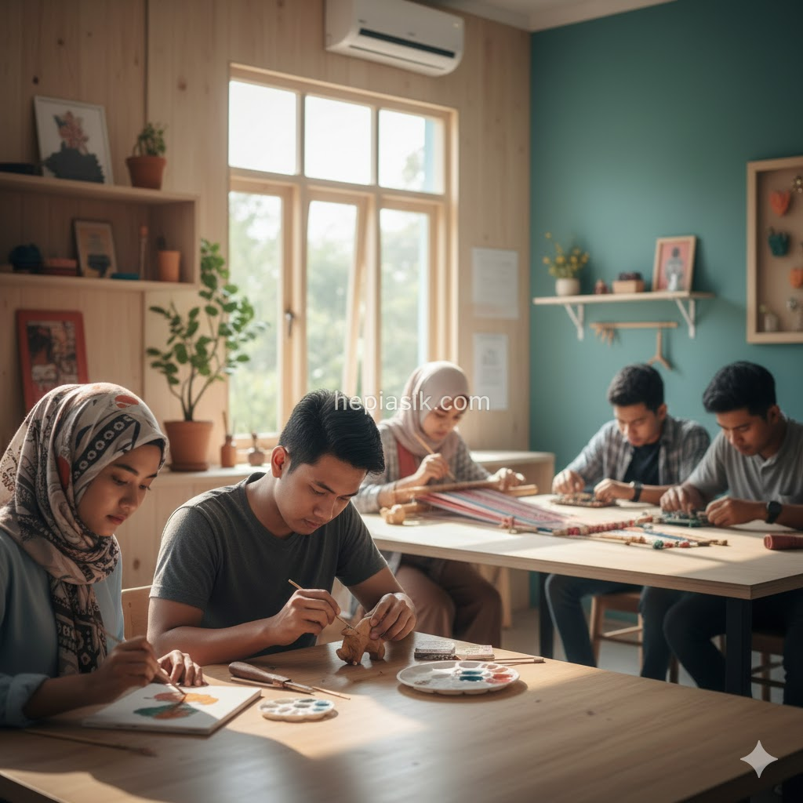
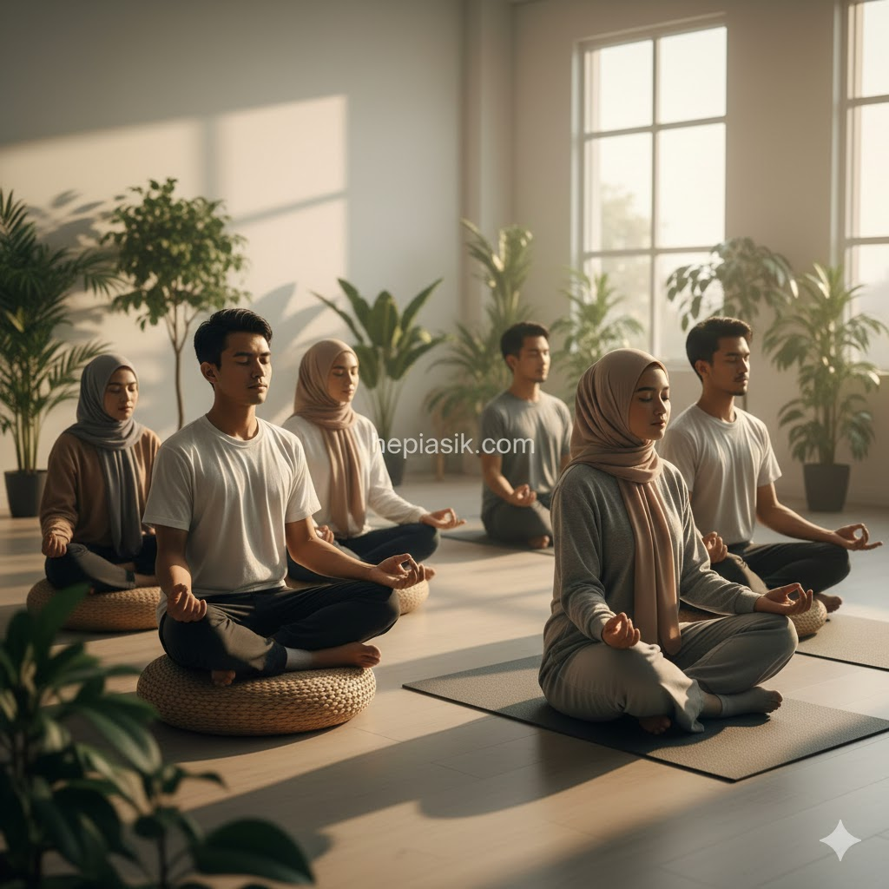

Mengisi Waktu Luang dengan Cara Positif dan Santai
Banyak individu modern terjebak dalam ritme "hustle culture" yang membuat mereka merasa bersalah ketika berhenti sejenak untuk beristirahat. Fenomena ini sering kali berujung pada kelelahan mental kronis akibat ketidakmampuan memisahkan antara ambisi profesional dan kebutuhan biologis akan relaksasi. Mengisi waktu luang dengan cara positif dan santai bukanlah sebuah pemborosan waktu, melainkan strategi krusial untuk menjaga stabilitas emosional dan ketajaman kognitif. Kebahagiaan sejati tidak ditemukan dalam kesibukan yang tanpa henti, melainkan dalam kemampuan untuk menikmati jeda dengan penuh kesadaran.
Pemanfaatan waktu luang yang tepat berfungsi sebagai mekanisme pemulihan energi (Schwartz, Tony, The Way We're Working Isn't Working, 2010). Ketika kita memberikan ruang bagi pikiran untuk melepaskan beban tugas, otak secara otomatis melakukan konsolidasi informasi dan pembersihan limbah metabolik yang menumpuk selama bekerja. Artikel ini akan mengeksplorasi berbagai metodologi berbasis riset untuk mengubah waktu senggang Anda menjadi momen transformasi diri yang menenangkan tanpa tekanan pencapaian.
Seni Melambatkan Ritme: Mengapa Santai Itu Penting?
Melambatkan ritme hidup atau "slowing down" adalah sebuah keterampilan yang perlu dilatih di tengah dunia yang serba instan. Keinginan untuk selalu produktif sering kali justru menurunkan kualitas hasil kerja karena otak kehilangan fleksibilitasnya. Dalam perspektif neurosains, saat kita bersantai dengan cara positif, kita mengaktifkan *Default Mode Network* (DMN) di otak, yang berperan penting dalam kreativitas dan pemecahan masalah (Newport, Cal, Deep Work, 2016). Kondisi ini tidak bisa dicapai jika kita terus-menerus terpapar stimulasi dari gawai atau tuntutan pekerjaan.
Menurut laporan dari World Health Organization (WHO, 2024), kegagalan dalam mengelola waktu istirahat secara berkualitas merupakan salah satu pemicu utama gangguan kecemasan di kalangan pekerja produktif. Oleh karena itu, mengisi waktu luang dengan aktivitas yang menenangkan seperti mendengarkan musik atau sekadar duduk tanpa melakukan apapun—sebuah konsep yang dikenal sebagai *Niksen*—adalah kebutuhan medis yang nyata (Mecking, Olga, Niksen: The Dutch Art of Doing Nothing, 2020). Aktivitas pasif ini sebenarnya sangat aktif dalam meregenerasi fungsi psikologis kita.
Insight penting dari subbab ini adalah bahwa "santai" tidak sama dengan "malas". Kesuksesan jangka panjang membutuhkan keseimbangan antara kerja keras dan pemulihan total. Solusinya, berikan diri Anda izin eksplisit untuk tidak melakukan apa pun selama minimal 15 menit setiap hari untuk menurunkan tegangan saraf simpatik.
Menciptakan Kebahagiaan Melalui Aktivitas Taktil
Di era yang didominasi oleh interaksi digital, keterlibatan tangan secara fisik dengan benda-benda nyata memberikan efek terapeutik yang luar biasa. Aktivitas taktil seperti memasak, merajut, atau merakit model mekanik memaksa otak untuk fokus pada detail sensorik, yang secara alami menghentikan arus pikiran negatif atau ruminasi. Kondisi ini sering kali membawa seseorang masuk ke dalam keadaan "Flow", di mana tantangan aktivitas selaras dengan kemampuan diri (Csikszentmihalyi, Mihaly, Flow: The Psychology of Optimal Experience, 1990).

Psikologi positif menekankan bahwa kebahagiaan sering kali muncul dari pencapaian-pencapaian kecil yang nyata (Seligman, Martin, Authentic Happiness, 2002). Ketika Anda berhasil menyelesaikan sebuah masakan atau menanam tanaman hias di balkon, otak melepaskan dopamin dengan cara yang lebih sehat dan stabil dibandingkan dengan dopamin yang didapat dari media sosial. Mengisi waktu luang dengan cara positif ini membangun rasa efikasi diri, yaitu kepercayaan bahwa kita mampu mengendalikan lingkungan kita secara kreatif.
Aktivitas manual berfungsi sebagai jangkar mental yang menarik kita kembali ke realitas saat ini. Solusinya, pilihlah satu hobi fisik yang sama sekali tidak berhubungan dengan layar komputer dan lakukanlah sebagai bentuk perayaan atas waktu luang Anda.
Eksplorasi Literasi sebagai Jendela Dunia yang Menenangkan
Membaca bukan hanya cara untuk mendapatkan informasi, tetapi juga salah satu bentuk meditasi paling efektif untuk mengisi waktu luang dengan cara positif. Saat kita membaca buku fisik, kita melatih fokus mendalam yang sering kali hilang akibat kebiasaan mengonsumsi konten pendek yang terfragmentasi. Membaca literatur berkualitas dapat menurunkan detak jantung dan merilekskan otot-otot yang tegang (Goleman, Daniel, Emotional Intelligence, 1995). Ini adalah bentuk hiburan santai yang sekaligus memperkaya kosakata dan perspektif hidup.
Bagi mereka yang merasa sulit memulai, kuncinya adalah membangun kebiasaan kecil yang konsisten (Clear, James, Atomic Habits, 2018). Membaca sepuluh halaman buku sebelum tidur atau saat sore hari dapat memberikan rasa damai yang tidak bisa diberikan oleh televisi. Selain itu, buku menawarkan pelarian intelektual yang sehat, memungkinkan kita untuk berkelana ke berbagai dimensi waktu dan pemikiran tanpa harus meninggalkan kenyamanan kursi kita sendiri.
Membaca adalah investasi pada ketenangan batin dan kecerdasan emosional. Insight solusinya: gantilah durasi *scrolling* media sosial di malam hari dengan membaca buku untuk meningkatkan kualitas tidur dan kesegaran mental di pagi hari.
Koneksi dengan Alam: Terapi Gratis untuk Jiwa
Manusia memiliki kecenderungan bawaan untuk mencari koneksi dengan alam, sebuah konsep yang disebut biofilia. Mengisi waktu luang dengan cara positif melalui jalan kaki di taman atau sekadar duduk di bawah pohon terbukti secara klinis menurunkan kadar hormon stres dalam tubuh. Studi yang diterbitkan oleh Nature Scientific Reports (Nature, 2023) menunjukkan bahwa menghabiskan waktu setidaknya 120 menit seminggu di alam terbuka berkorelasi signifikan dengan peningkatan kesehatan dan kesejahteraan mental.
Berada di alam memberikan efek "Attention Restoration", di mana kelelahan mental akibat fokus pada tugas-tugas berat di kantor dapat dipulihkan oleh stimulasi alam yang lembut (Thoreau, Henry David, Walking, 1862). Suara gemericik air, semilir angin, dan pemandangan hijau adalah obat santai yang gratis namun sangat kuat. Bagi penduduk perkotaan, mencari ruang terbuka hijau di akhir pekan adalah strategi bertahan hidup yang esensial agar jiwa tidak terkikis oleh beton dan aspal.
Alam mengajarkan kita tentang ritme pertumbuhan yang sabar dan tidak tergesa-gesa. Kesimpulannya, jadikan alam sebagai ruang rekreasi utama Anda untuk mendapatkan perspektif baru yang lebih jernih dalam menghadapi tantangan hidup.
Manajemen Dopamin: Mengatur Hiburan Agar Tetap Sehat
Penting untuk membedakan antara aktivitas yang benar-benar mengisi ulang energi dan aktivitas yang justru mengurasnya. Hiburan santai seperti menonton film secara berlebihan (*binge-watching*) sering kali justru meninggalkan perasaan hampa karena terjadi lonjakan dopamin yang tidak disertai dengan makna. Kita harus bijak dalam mengatur asupan hiburan digital agar tidak terjebak dalam kecanduan yang merusak sirkuit penghargaan di otak (Lembke, Anna, Dopamine Nation, 2021).
Mengisi waktu luang dengan cara positif berarti memilih aktivitas yang memberikan kepuasan jangka panjang, bukan sekadar kesenangan instan. Praktik meditasi atau menulis jurnal adalah contoh hiburan santai yang mungkin terasa "lambat" di awal, tetapi memberikan kejernihan pikiran yang bertahan lama (Kondo, Marie, The Life-Changing Magic of Tidying Up, 2014). Dengan menyeimbangkan asupan dopamin, kita menjaga otak agar tetap sensitif terhadap kebahagiaan-kebahagiaan kecil yang alami.

Kunci dari manajemen dopamin adalah disiplin diri dalam menentukan batasan penggunaan teknologi. Insight solusinya: lakukan "digital detox" secara berkala saat waktu luang untuk mengembalikan orientasi kebahagiaan Anda pada hal-hal yang nyata dan bermakna.
Pentingnya Interaksi Sosial yang Bermakna di Waktu Senggang
Manusia adalah makhluk sosial yang membutuhkan koneksi mendalam untuk tetap merasa utuh. Mengisi waktu luang dengan cara positif bisa diwujudkan melalui obrolan santai yang berkualitas dengan keluarga atau teman dekat. Namun, kualitas interaksi ini sangat bergantung pada kehadiran penuh kita di momen tersebut. Menghabiskan waktu bersama orang terkasih tanpa interupsi ponsel adalah bentuk kasih sayang yang paling tinggi (Waldinger, Robert & Schulz, Marc, The Good Life, 2023).
Hubungan sosial yang kuat bertindak sebagai penyangga terhadap stres kehidupan. Mendengarkan cerita teman atau berbagi tawa dalam sebuah makan malam sederhana adalah hiburan santai yang memperkuat sistem imun psikologis kita (Fromm, Erich, The Art of Loving, 1956). Kita harus secara aktif mengalokasikan waktu untuk "merawat" hubungan sosial kita sebagaimana kita merawat tanaman atau karier kita. Persahabatan yang tulus adalah sumber inspirasi yang tidak ada habisnya.
Kesimpulan kecilnya, waktu luang adalah kesempatan emas untuk memperdalam ikatan emosional dengan orang-orang di sekitar kita. Solusinya, jadwalkan satu momen interaksi sosial berkualitas setiap minggunya yang bebas dari distraksi digital.
Optimalisasi Ruang Pribadi untuk Relaksasi yang Efektif
Lingkungan sekitar kita sangat mempengaruhi kemampuan kita untuk bersantai. Ruang yang berantakan sering kali menciptakan beban kognitif tambahan bagi otak yang sudah lelah. Mengisi waktu luang dengan merapikan atau menata ulang ruang pribadi bisa menjadi aktivitas positif yang sangat memuaskan (Botton, Alain de, The Architecture of Happiness, 2006). Menciptakan estetika ruang yang tenang membantu memicu respon relaksasi tubuh secara otomatis saat kita memasuki ruangan tersebut.
Pengaturan pencahayaan yang hangat, penambahan tanaman hijau, atau penggunaan aroma terapi adalah cara-cara santai untuk meningkatkan kualitas waktu istirahat di rumah. Rumah seharusnya menjadi perlindungan dari hiruk-pikuk dunia luar, sebuah tempat di mana kita bisa benar-benar menjadi diri sendiri (Goleman, Daniel, Focus: The Hidden Driver of Excellence, 2013). Ketika lingkungan mendukung, aktivitas sesederhana tidur siang pun bisa menjadi sangat berkualitas.
Lingkungan yang tertata adalah cerminan dari pikiran yang tertata. Insight solusinya: luangkan sedikit waktu senggang untuk membuang barang yang tidak lagi memberikan kegembiraan dan ciptakan satu sudut khusus untuk relaksasi total di rumah Anda.
Menyeimbangkan Ambisi dengan Pemulihan Energi
Pada akhirnya, cara kita mengisi waktu luang adalah cerminan dari filosofi hidup kita. Menghargai waktu santai bukan berarti kita kehilangan ambisi, melainkan kita memahami bahwa performa puncak membutuhkan pemulihan puncak (Loehr, Jim & Schwartz, Tony, The Power of Full Engagement, 2003). Dengan mengisi waktu luang dengan cara positif, kita membangun cadangan energi yang kuat untuk menghadapi hari esok dengan lebih antusias dan fokus.
Setiap orang memiliki cara santai yang berbeda, dan penting untuk menemukan apa yang paling cocok bagi kepribadian Anda sendiri. Jangan terjebak pada tren, tetapi dengarkan kebutuhan tubuh dan jiwa Anda sendiri. Kebahagiaan adalah sebuah keterampilan yang bisa dipelajari melalui kebiasaan-kebahagiaan kecil yang kita lakukan di waktu senggang (Duckworth, Angela, Grit, 2016). Dengan kesadaran penuh, setiap momen luang bisa menjadi langkah menuju hidup yang lebih berkualitas dan penuh makna.
Integrasikan aktivitas santai ini bukan sebagai hadiah setelah bekerja, melainkan sebagai bagian tak terpisahkan dari gaya hidup sehat. Solusi pamungkasnya adalah memandang waktu luang sebagai ruang sakral untuk bertumbuh secara internal tanpa harus terikat pada ekspektasi eksternal.